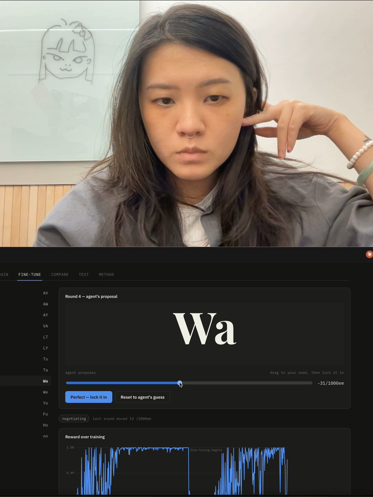
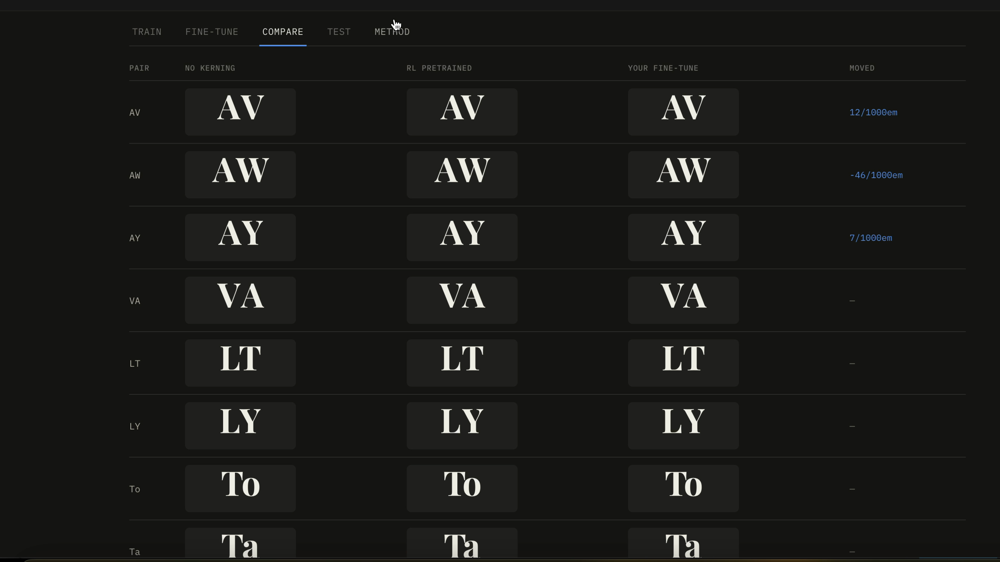
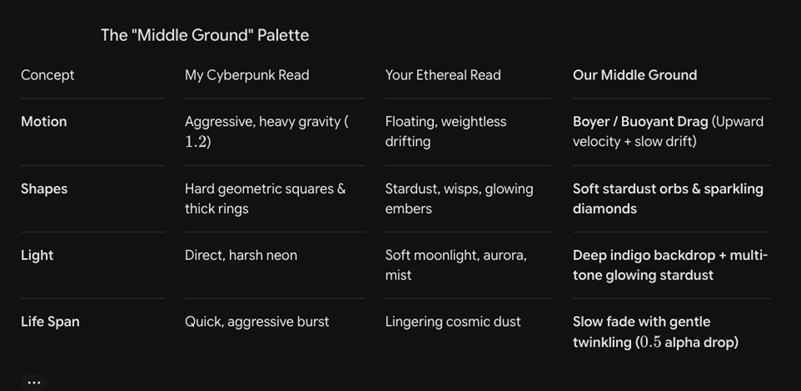
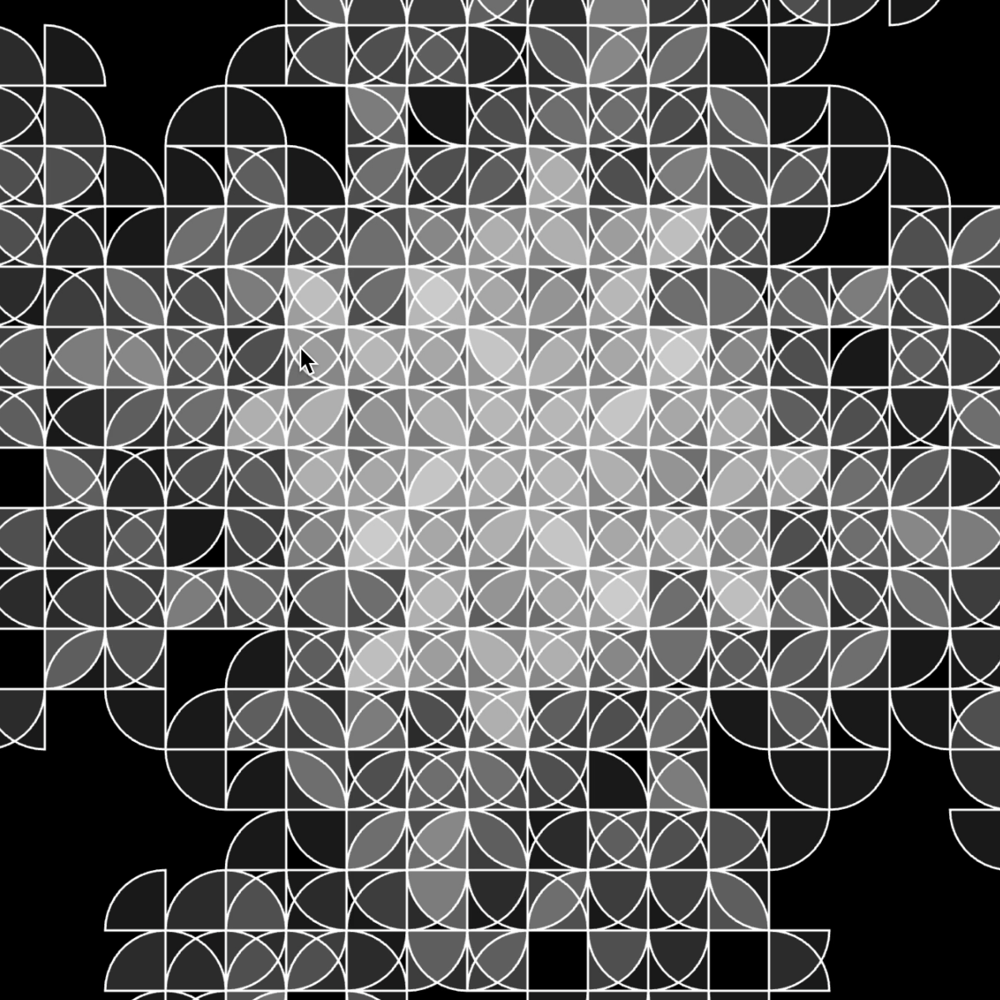
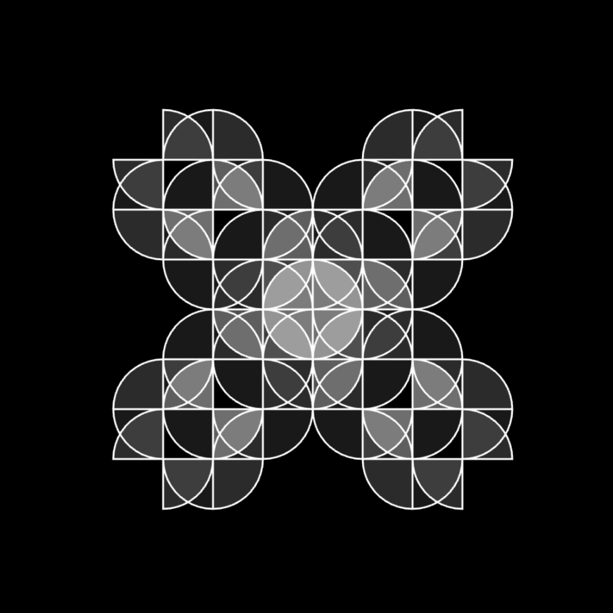

led to also connects
Drag an experiment to pull its links. Click to jump to it.
Catalogue of Making · 12 experiments · 2 prototypes
From talking to AI to writing with my hands
Every experiment started from a question the one before it left open. I began by asking whether an AI could teach me to kern, and ended up building a language that lets a hand write code.
Semester 1 · in the order I made them
Kerning with an Agent
My eye → slider → agent retrains → new spacing
A reinforcement-learning agent, written from scratch, that kerns letter pairs. It first trains itself on 14 pairs (AV, LY, To, Wa…) against an optical-spacing score. Then it negotiates with me: it proposes a gap, I drag it to what looks right and lock it in, and it retrains towards my choice. Every round is logged: what it proposed, what I chose, and how far apart we were.
| Step | What happens |
|---|---|
| Train | the agent spaces all 14 pairs, 320 rounds each |
| Fine-tune | it proposes a gap → I adjust → it retrains |
| Friction log | round · agent's value · mine · distance |
| Compare | no kerning · agent · my fine-tune |
Built with: HTML + JavaScript · reinforcement learning (REINFORCE), no library
reward(g) = exp( −((area(g) − target) / tolerance)² )
− collision_penalty(g)The agent's score: white space between two letters, averaged row by row

Me, the webcam, and the agent's proposal for Wa
A negotiation round: Wa

No kerning · agent · me
Collaborating with AI
My code edits ↔ the AI's code edits → one p5.js sketch
A p5.js button that bursts into particles, built back and forth with Gemini. The AI wrote the baseline, I edited the code, and it read my edits and replied with its own version. Eight versions in total, four mine and four the AI's, ending with the button removed so a click anywhere spawns particles. The p5 console stays in every clip: the machine talking back.
| Version | Who | Change |
|---|---|---|
| 2.1 | AI | a plain button; click = random colour |
| 2.2 | AI | particles that fall hard (gravity 1.2) |
| 2.3 | me | gravity 0.15: they float |
| 2.4 | AI | squares and rings, "chaotic physics" |
| 2.5 | AI | indigo stardust drifting upward |
| 2.6 | me | motion trails |
| 2.7 | AI | Perlin-noise wind |
| 2.8 | me | button removed: click anywhere |
Built with: p5.js · with Gemini
this.vy += 1.2; // AI this.vy += 0.15; // me
The same line, two versions
2.7 · the AI adds wind
2.3 · me
2.5 · AI

2.4 · the AI's "middle ground" table
What the Machine Interprets
Numbers · hand landmarks → simple visual studies
Three small studies, each stripping one idea down to its rawest form. A feedback loop: a frame that samples itself and steps across the screen. Noise: particles placed exactly where Perlin-noise values sit. Hand tracking: the distance between two fingers scales the visual, a second hand triggers "next", and the values are smoothed to calm the camera's jitter.
| Gesture | Result |
|---|---|
| pinch (distance between fingers) | scale |
| second hand | next |
Built with: TouchDesigner · computer-vision hand tracking
Webcam view: scale + next
The gesture, filmed from outside
Feedback loop
Noise grid
Hands and Code
Raised fingers · hand pose → shapes · whole systems
Two sketches using MediaPipe hand tracking. In the first, the number of raised fingers drops a shape that falls and stacks; the stack clears at 20. In the second, the hand switches between whole systems: a fist shows a grid of squares that rotate with the hand's distance, an open palm shows a Perlin flow field, and a pinch toggles 4-way symmetry.
| Gesture | Result |
|---|---|
| fist / 1 finger | circle |
| 2 fingers | square |
| 3+ fingers | triangle |
| closed fist | grid of rotating squares |
| open palm | flow field |
| pinch | 4-way symmetry on / off |
Built with: p5.js · MediaPipe Hands
if (extendedFingers <= 1) shape = 'circle'; else if (extendedFingers == 2) shape = 'square'; else shape = 'triangle';
Fingers counted, shape chosen (simplified)
Fist → grid
Fist → circle
2 fingers → square
3 fingers → triangle
Open palm → flow field
Active / Non-Active
Hand closed / open → 0 / 1
One hand as one switch. The sketch measures the distance from the wrist to the middle fingertip: over 110 px the hand is open and the screen shows 1 in white; under it, the hand is closed and the screen shows 0 in black.
| Gesture | Bit | Screen |
|---|---|---|
| closed hand | 0 | black |
| open hand | 1 | white |
Built with: p5.js · ml5 handPose
isActive = currentDist > DIST_THRESHOLD; // wrist ↔ middle tip > 110px
The whole rule
Closed = 0 · open = 1
How Machine Code Works
5 fingers → binary number → letter → typed message
A 5-bit hand decoder. Each finger is a bit: pinky 1, ring 2, middle 4, index 8, thumb 16. The raised fingers are added up and 1–26 become A–Z, so K = 11 = index + ring + pinky. Hold a pose for 0.8 s to type the letter; wave fast to clear the message.
| Finger | Value |
|---|---|
| pinky | 1 |
| ring | 2 |
| middle | 4 |
| index | 8 |
| thumb | 16 |
Built with: p5.js · MediaPipe Hands
const BIT_VALUES = [16, 8, 4, 2, 1]; // thumb … pinky letter = String.fromCharCode(64 + total); // 11 → 'K'
Fingers → a number → a letter
Typing with the decoder

The hand

1–26 = A–Z
Movement Manipulates Visuals
Pinch · stretch · rotate → a field of circles
A field of circles driven by one hand. Three measurements: pinch (thumb to index) squeezes the circles, stretch (thumb to middle) swells them, and the angle from wrist to index twists the field, more strongly the further a circle is from the centre. Each move is shown twice: filmed from outside, and on screen.
| Gesture | Result |
|---|---|
| close the hand | circles shrink |
| open wider | circles grow |
| turn left | field rotates left |
| turn right | field rotates right |
Built with: p5.js · ml5 handPose
pinch = map(dist(thumb, index), 20, 110, 1, 0); stretch = map(dist(thumb, middle), 40, 180, 0, 1); rotate = atan2(index.y - wrist.y, index.x - wrist.x);
Three measurements from one hand
The circle field
Open → bigger (camera)
Open → bigger (screen)
Turn → rotate (camera)
Turn → rotate (screen)
Understanding Values
Hold a pose 0.5 s → a grey value locks into the next cell
An 8 × 8 grid written one cell at a time. Hold a pose for half a second and its value locks into the next cell: a firm pinch is near black, a wide-open hand is white, and everything between is a shade of grey. Once the grid is written, two hands stretch and rotate it.
| Gesture | Value |
|---|---|
| firm pinch, held | near black |
| loose pinch, held | dark grey |
| half-open hand, held | light grey |
| wide-open hand, held | white |
| two hands apart | stretch the grid (0.1× to 2.5×) |
Built with: p5.js · MediaPipe Hands
grey = isHandClosed ? map(confidence, 1.0, 0.4, 0, 80) // firm pinch → near black : map(confidence, 1.0, 0.4, 255, 120); // wide open → white
How clearly the pose is held sets the value
Two hands stretch the grid
Hold → the value locks → next cell
Defining What Each Gesture Controls
Finger taps · pinch + twist → shade, scale, rotation of one square
One square and six rules, each labelled on screen as a class. A "tap" is a fingertip touching the thumb; two taps within 0.35 s is a double tap. The index finger changes shade (five greys), the middle finger changes scale by 10%, and a pinch with a twist rotates the square 45°.
| Class | Gesture | Result |
|---|---|---|
| 1 | index taps thumb | next shade |
| 2 | index double tap | previous shade |
| 3 | middle taps thumb | scale up 10% |
| 4 | middle double tap | scale down 10% |
| 5 | pinch + twist | rotate −45° |
| 6 | pinch + twist the other way | rotate +45° |
Built with: p5.js · MediaPipe Hands
if (angleDelta > TWIST_ANGLE_THRESHOLD) {
squareRotation += QUARTER_PI;
triggerGesture("Class 6: Rotate CW 45°");
}One rule, named like a word in a vocabulary
Pinch + twist → rotate 45°
Class 1 · next shade
Class 2 · previous shade
Class 3 · scale up
Class 4 · scale down
Class 5 · rotate −45°
Chladni Harmonic
The six gestures from 09 → m, n, a → 1,800 grains of sand
The same six gestures as 09, plugged into a Chladni equation. Taps change m and n, a pinch with a twist changes a, and 1,800 grains of "sand" drift to where the plate is still, re-forming the pattern after every change.
| Gesture | Changes |
|---|---|
| index tap / double tap | m +1 / −1 |
| middle tap / double tap | n +1 / −1 |
| pinch + twist | a +0.5 / −0.5 |
Built with: p5.js · MediaPipe Hands
a · sin(n·x) · sin(m·y) + b · sin(m·x) · sin(n·y)
The equation the hands are editing
Middle tap · n + 1
Index tap · m
Pinch + twist · a
Generating with L-system
Thumb-to-finger pinches → symbols in a string → a fist grows it
An L-system written by hand. Each thumb-to-finger pinch adds a symbol to a string; closing and opening a fist grows the string by one generation through two rewrite rules. A turtle draws the string as quarter circles on a grid, tiled with 4-way symmetry. A wave resets it to F.
| Hand | Symbol | Draws |
|---|---|---|
| right thumb + index | F | quarter circle, step diagonally |
| right thumb + ring | G | mirrored quarter circle, step right |
| right thumb + middle | + | flip left ↔ right |
| right thumb + pinky | − | flip both ways |
| left thumb + index | [ | remember this position |
| left thumb + middle | ] | go back to it |
| fist close → open | grow one generation | |
| wave | reset to F |
Built with: p5.js · MediaPipe Hands
F → FGH+[+F+G-H-G-F-G]-[-H-G+F+G+H+G] H → HHF+[+H-F+G]
The two rewrite rules

A pattern written by hand
Writing the string
Growing

Result

Result
Setting Syntax to Gestures
Gestures → tokens → compiled p5.js → three rectangles
Gestures as programming tokens. Opening a fist writes FOR_LOOP_START, signing 3 with the left hand writes LOOP_COUNT_3, and a clap compiles the tokens into p5.js code that draws three rectangles.
| Gesture | Token |
|---|---|
| fist opens | FOR_LOOP_START |
| left hand signs 3 | LOOP_COUNT_3 |
| clap | COMPILE |
Built with: p5.js · MediaPipe Hands
FOR_LOOP_START → LOOP_COUNT_3 → COMPILE
Three gestures, three tokens
Writing a for loop by hand, then clapping to compile
Human Language → Gesture
Prompt card → a participant's gesture (filmed) → others guess the word
A gesture study with four participants. I listed what p5.js draws all the time in three categories (objects, values and motion) and wrote a prompt card for each word, from obvious to deliberately hard to sign. Each participant signed every card on video; other people then watched the videos and guessed the words.
| Objects | Values | Motion |
|---|---|---|
| circle | very few | shrinking |
| triangle | double | flowing |
| rectangle | lesser | rigid |
| line | half | random |
| quarter circle | any value 1–10 | rippling |
| blob | a lot | collapsing |
Built with: Prompt cards · video · 4 participants
The prompt cards: one word per card, punched like a punch card
Andie · triangle
Celine · rippling
Kimberly · circle
Roger · double
Gesture → Symbol → Hydra
Hand signs → a line of symbols → RUN → live Hydra visuals
The first working version of the language. The webcam recognises my hand signs, each sign is written as a symbol into a line, sorted into objects, values and motion, and pressing RUN turns the line into live visuals in Hydra. The signs were trained on the Prototype 1 footage.
Documentation coming.
Built with: MediaPipe · Hydra
Prototype 2 · media coming